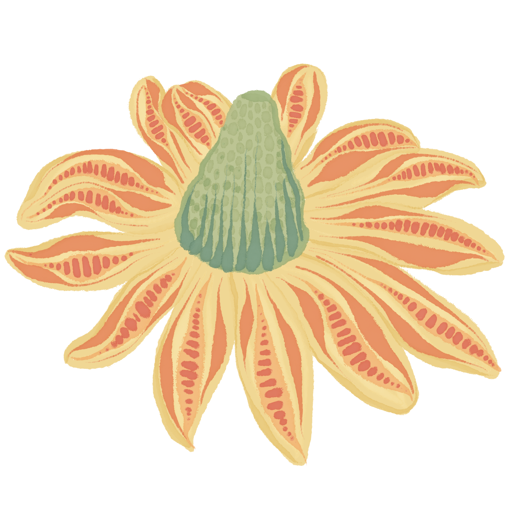
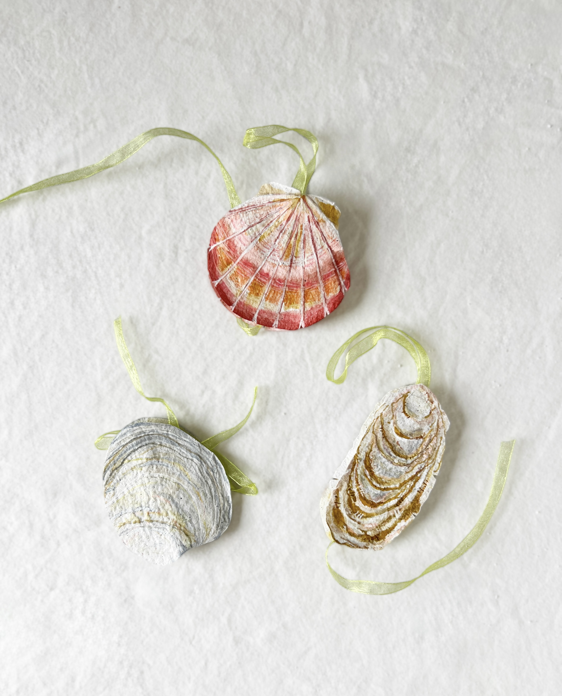
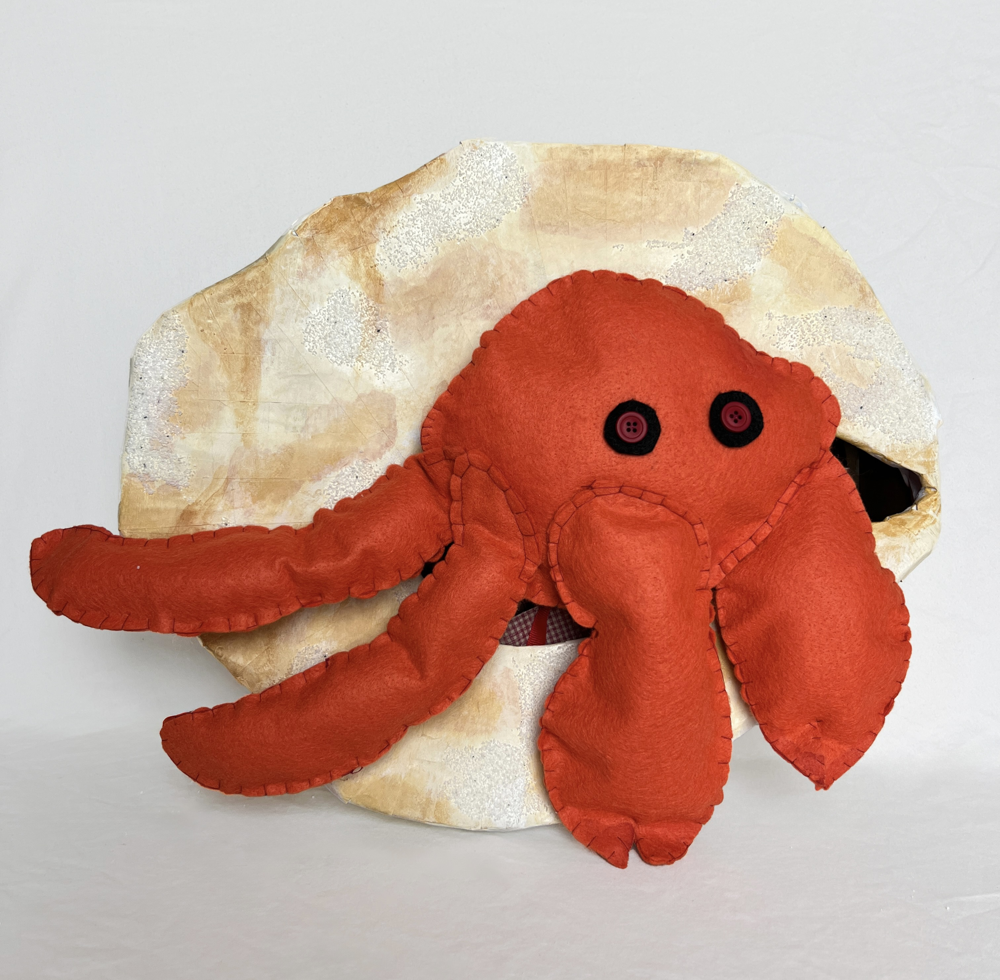
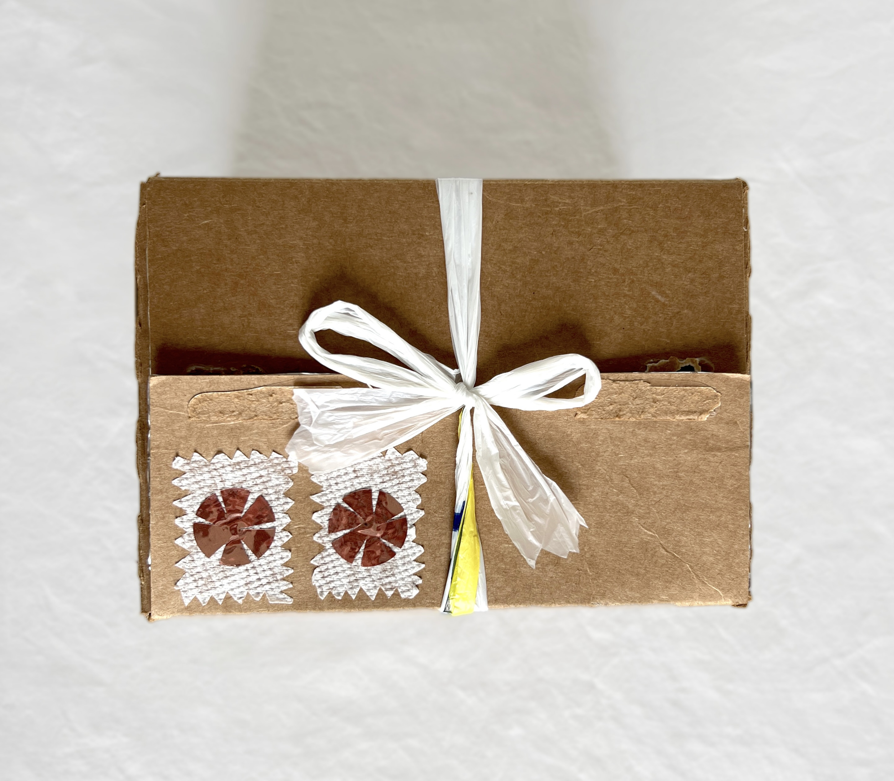
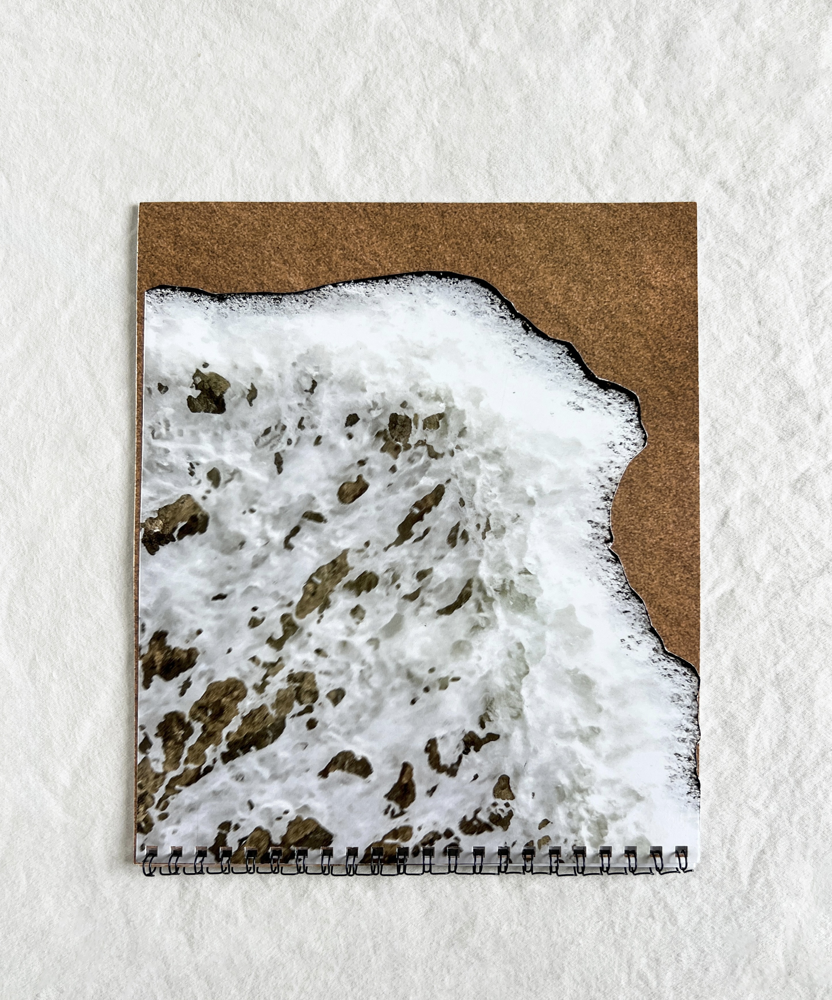
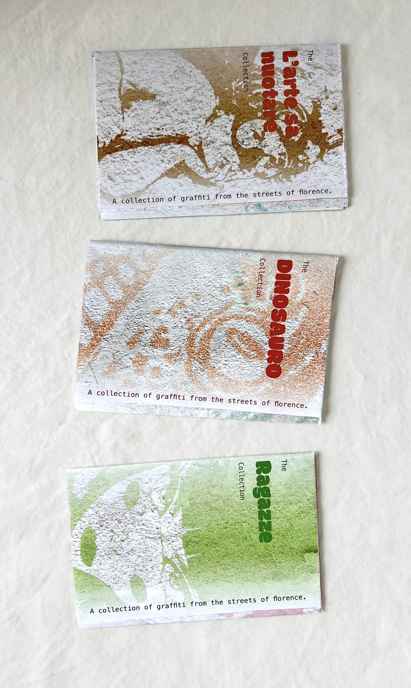

JOLIE'S PORTFOLIO
A delicate collection of design, inspired by simplicity and nature.
My work reflects a sense of calm, blending organic textures with modern design.


MY WORK
1
Description of project 1.
2
Description of project 2.
3
Description of project 3.
4
Description of project 4.
5
Little Scratch is a project consisting of three zines centered around the graffiti culture in Italy.
×